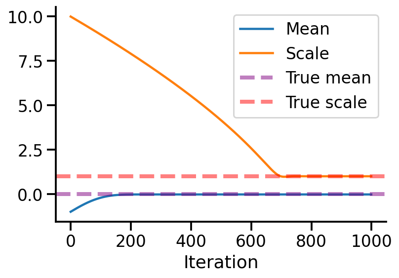

import numpy as np
import matplotlib.pyplot as plt
import tensorflow as tf
import seaborn as sns
import tensorflow_probability as tfp
import pandas as pd
tfd = tfp.distributions
sns.reset_defaults()
sns.set_context(context='talk',font_scale=1)
%matplotlib inline
%config InlineBackend.figure_format='retina'Univariate normal
uv_normal = tfd.Normal(loc=0., scale=1.)uv_normal<tfp.distributions.Normal 'Normal' batch_shape=[] event_shape=[] dtype=float32>samples = uv_normal.sample(1000)sns.histplot(samples.numpy())
sns.despine()
sns.displot(samples.numpy(), kind='kde')
uv_normal_dict_mean = {x: tfd.Normal(loc=x, scale=1.) for x in [-2, -1, 0, 1, 2]}uv_normal_dict_mean_samples = pd.DataFrame({x:uv_normal_dict_mean[x].sample(10000).numpy()
for x in uv_normal_dict_mean})sns.displot(uv_normal_dict_mean_samples, kind='kde', fill=True)
uv_normal_dict_var = {x: tfd.Normal(loc=0, scale=x) for x in [1, 2, 5, 10]}
uv_normal_dict_var_samples = pd.DataFrame({x:uv_normal_dict_var[x].sample(10000).numpy()
for x in uv_normal_dict_var})sns.displot(uv_normal_dict_var_samples, kind='kde', fill=True)
Using batches
var_dfs = pd.DataFrame(
tfd.Normal(loc=[0., 0., 0., 0.],
scale=[1., 2., 5., 10.]).sample(10000).numpy())
var_dfs.columns = [1, 2, 5, 10]
sns.displot(var_dfs, kind='kde', fill=True)
tfd.Normal(loc=[0., 0., 0., 0.],
scale=[1., 2., 5., 10.])<tfp.distributions.Normal 'Normal' batch_shape=[4] event_shape=[] dtype=float32>samples = uv_normal.sample(10000)
sns.displot(samples.numpy(), kind='kde')
plt.axvline(0.5, color='k', linestyle='--')
pdf_05 = uv_normal.prob(0.5).numpy()
log_pdf_05 = uv_normal.log_prob(0.5).numpy()
plt.title("Density at x = 0.5 is {:.2f}\n Logprob at x = 0.5 is {:.2f}".format(pdf_05, log_pdf_05))Text(0.5, 1.0, 'Density at x = 0.5 is 0.35\n Logprob at x = 0.5 is -1.04')
Learning parameters
Let us generate some normally distributed data and see if we can learn the mean.
train_data = uv_normal.sample(10000)uv_normal.loc, uv_normal.scale(<tf.Tensor: shape=(), dtype=float32, numpy=0.0>,
<tf.Tensor: shape=(), dtype=float32, numpy=1.0>)Let us create a new TFP trainable distribution where we wish to learn the mean.
to_train = tfd.Normal(loc = tf.Variable(-1., name='loc'), scale = 1.)to_train<tfp.distributions.Normal 'Normal' batch_shape=[] event_shape=[] dtype=float32>to_train.trainable_variables(<tf.Variable 'loc:0' shape=() dtype=float32, numpy=-1.0>,)tf.reduce_mean(train_data), tf.math.reduce_variance(train_data)(<tf.Tensor: shape=(), dtype=float32, numpy=-0.024403999>,
<tf.Tensor: shape=(), dtype=float32, numpy=0.9995617>)def nll(train):
return -tf.reduce_mean(to_train.log_prob(train))nll(train_data)<tf.Tensor: shape=(), dtype=float32, numpy=1.8946133>def get_loss_and_grads(train):
with tf.GradientTape() as tape:
tape.watch(to_train.trainable_variables)
loss = nll(train)
grads = tape.gradient(loss, to_train.trainable_variables)
return loss, gradsget_loss_and_grads(train_data)(<tf.Tensor: shape=(), dtype=float32, numpy=1.8946133>,
(<tf.Tensor: shape=(), dtype=float32, numpy=-0.97559595>,))optimizer = tf.keras.optimizers.Adam(learning_rate=0.01)optimizer<keras.optimizer_v2.adam.Adam at 0x7f94c97ae490>iterations = 500
losses = np.empty(iterations)
vals = np.empty(iterations)
for i in range(iterations):
loss, grads = get_loss_and_grads(train_data)
losses[i] = loss
vals[i] = to_train.trainable_variables[0].numpy()
optimizer.apply_gradients(zip(grads, to_train.trainable_variables))
if i%50 == 0:
print(i, loss.numpy())0 1.8946133
50 1.5505791
100 1.4401271
150 1.4205703
200 1.4187955
250 1.4187206
300 1.4187194
350 1.4187193
400 1.4187193
450 1.4187194plt.plot(losses)
sns.despine()
plt.xlabel("Iterations")
plt.ylabel("Loss")Text(0, 0.5, 'Loss')
plt.plot(vals)
sns.despine()
plt.xlabel("Iterations")
plt.ylabel(r"Value of $\hat{\mu}$")Text(0, 0.5, 'Value of $\\hat{\\mu}$')
to_train_mean_var = tfd.Normal(loc = tf.Variable(-1., name='loc'), scale = tf.Variable(10., name='scale'))
def nll(train):
return -tf.reduce_mean(to_train_mean_var.log_prob(train))
def get_loss_and_grads(train):
with tf.GradientTape() as tape:
tape.watch(to_train_mean_var.trainable_variables)
loss = nll(train)
grads = tape.gradient(loss, to_train_mean_var.trainable_variables)
return loss, grads
to_train_mean_var.trainable_variables
optimizer = tf.keras.optimizers.Adam(learning_rate=0.01)
iterations = 1000
losses = np.empty(iterations)
vals_scale = np.empty(iterations)
vals_means = np.empty(iterations)
for i in range(iterations):
loss, grads = get_loss_and_grads(train_data)
losses[i] = loss
vals_means[i] = to_train_mean_var.trainable_variables[0].numpy()
vals_scale[i] = to_train_mean_var.trainable_variables[1].numpy()
optimizer.apply_gradients(zip(grads, to_train_mean_var.trainable_variables))
if i%50 == 0:
print(i, loss.numpy())0 3.2312806
50 3.1768403
100 3.1204312
150 3.0602157
200 2.9945102
250 2.9219644
300 2.8410006
350 2.749461
400 2.6442661
450 2.5208094
500 2.3718355
550 2.1852348
600 1.9403238
650 1.6161448
700 1.4188237
750 1.4187355
800 1.4187193
850 1.4187193
900 1.4187193
950 1.4187193plt.plot(losses)
sns.despine()
plt.xlabel("Iterations")
plt.ylabel("Loss")Text(0, 0.5, 'Loss')
df = pd.DataFrame({"Mean":vals_means, "Scale":vals_scale}, index=range(iterations))
df.index.name = 'Iteration'df.plot(alpha=1)
sns.despine()
plt.axhline(0, linestyle='--', lw = 4, label = 'True mean', alpha=0.5, color='purple')
plt.axhline(1, linestyle='--', lw = 4, label = 'True scale', alpha=0.5, color='red')
plt.legend()
Multivariate Normal
mv_normal = tfd.MultivariateNormalFullCovariance(loc=[0, 0], covariance_matrix=[[1, 0.5], [0.5, 2]])mv_data = pd.DataFrame(mv_normal.sample(10000).numpy())
mv_data.columns = [r'$x_1$', r'$x_2$']mv_normal.prob([0, 0])<tf.Tensor: shape=(), dtype=float32, numpy=0.120309845>from mpl_toolkits.mplot3d import Axes3D
from matplotlib import cm
def make_pdf_2d_gaussian(mu, sigma):
N = 60
X = np.linspace(-3, 3, N)
Y = np.linspace(-3, 4, N)
X, Y = np.meshgrid(X, Y)
# Pack X and Y into a single 3-dimensional array
pos = np.empty(X.shape + (2,))
pos[:, :, 0] = X
pos[:, :, 1] = Y
F = tfd.MultivariateNormalFullCovariance(loc=mu, covariance_matrix=sigma)
Z = F.prob(pos)
plt.contourf(X, Y, Z, cmap=cm.Purples)
sns.despine()
plt.xlabel(r"$x_1$")
plt.ylabel(r"$x_2$")
plt.gca().set_aspect('equal')
plt.title(f'$\mu$ = {mu}\n $\Sigma$ = {np.array(sigma)}')make_pdf_2d_gaussian([0, 0,], [[1, 0.5,], [0.5, 1]])
make_pdf_2d_gaussian([0, 0,], [[3, 0.,], [0., 1]])
sns.jointplot(data=mv_data,
x=r'$x_1$',y=r'$x_2$',
alpha=0.1)
mv_data| $x_1$ | $x_2$ | |
|---|---|---|
| 0 | 2.155621 | -0.343866 |
| 1 | -0.731184 | 0.378393 |
| 2 | 0.832593 | -0.459740 |
| 3 | -0.701200 | -0.249675 |
| 4 | -0.430790 | -1.694002 |
| ... | ... | ... |
| 9995 | -0.165910 | -0.171243 |
| 9996 | 0.208389 | -1.698432 |
| 9997 | -0.030418 | 0.353905 |
| 9998 | 1.342328 | 1.127457 |
| 9999 | -0.145741 | 0.830713 |
10000 rows 2 columns